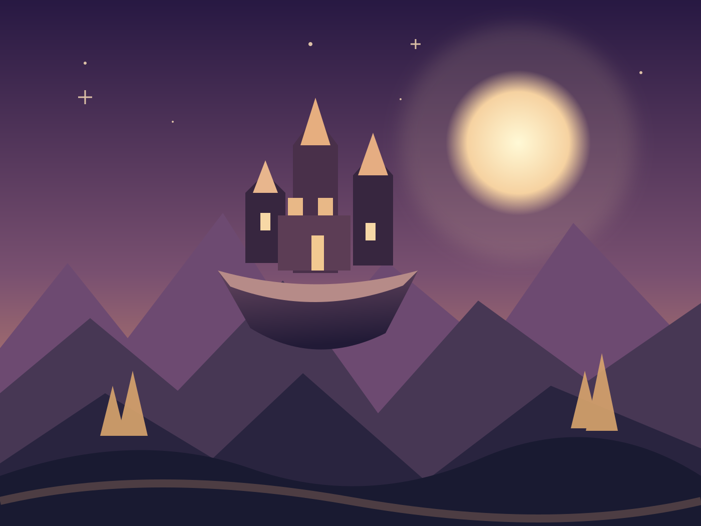

EARLY DEVELOPMENT
Play together.
Experimenting with playful, social experiences on Roblox. Built around discovery, imagination, and the fun of being together.
We’re a young game studio following our curiosity, making playful experiences today and dreaming up extraordinary worlds for tomorrow.
Enter our world
ACELDEN / ORIGINAL CONCEPT ARTOur first chapter begins with Roblox. Our long-term ambition reaches into expansive original 3D experiences. These are directions we're exploring, not announced releases.
Experimenting with playful, social experiences on Roblox. Built around discovery, imagination, and the fun of being together.
Original worlds with places worth exploring, stories worth sharing, and a little wonder around every corner.
NoeEngine is our experimental game engine project. We're working toward a creative toolset that feels approachable for newcomers and flexible for ambitious builders.
These are development goals, not claims of finished features.
Explore development ↗Leading Acelden as we begin turning ideas into games.
Building the technical foundations and creative tools behind the studio.
Acelden works in partnership with Noethric, a product studio that builds technology to solve real problems.
Discover Noethric ↗